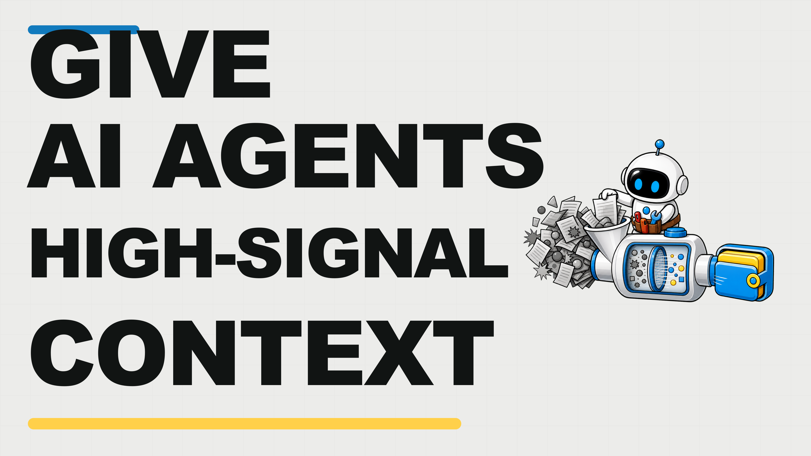

MORE CONTEXT CAN WEAKEN YOUR AI AGENT

 HIGH SIGNAL?
HIGH SIGNAL?CONTEXT IS A FINITE ATTENTION BUDGET
ANTHROPIC Attention is finite
Attention is finite
Attention is finiteOLD DETAILS CAN STEAL THE NEXT DECISION

 OLD DETAILS > TODAY'S GOALCURATE THE SIGNAL
OLD DETAILS > TODAY'S GOALCURATE THE SIGNALTHE SIX-PART HIGH-SIGNAL CONTEXT PACK


1Outcome2Operating rules3Tool map4Canonical examples5Retrieval index6Working state
MORE INPUT DOES NOT MEAN MORE SIGNAL

RAW HISTORY24%
CURRENT SIGNAL68%
JUST IN TIME92%
KEEP FOUR THINGS IN VIEW


GoalConstraintsEvidenceCurrent state
READY FOR THE NEXT DECISIONYour AI Agent can read more context and still lose the signal.
Anthropic calls context a finite attention budget: as the window grows, the next important signal can lose strength.
That means a longer prompt can confidently follow old details instead of today's goal.
In one minute, you'll learn the fix.
Build one six-part high-signal context pack: outcome, operating rules, tool map, canonical examples, retrieval index, and working state.
Now watch the budget.
Raw history fills the window, but the target shrinks.
Replace that pile with current constraints and live evidence.
The knowledge is not deleted; it waits outside the active window, ready to return when relevant.
The goal stays dominant.
Retrieve details only when the next decision needs them.
Each AI Agent step keeps four things visible: goal, constraints, evidence, and current state.
Everything else stays outside until its signal matters.
